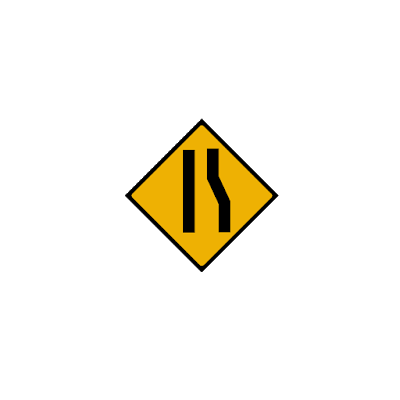

Fungsi marka jalan adalah..
Yang bukan merupakan Marka Lambang adalah
Rambu dengan warna dasar kuning dengan lambang atau tulisan berwarna hitam merupakan
Garis ganda yang terdiri dari garis utuh dan putus-putus termasuk..
Apa arti rambu berikut?
